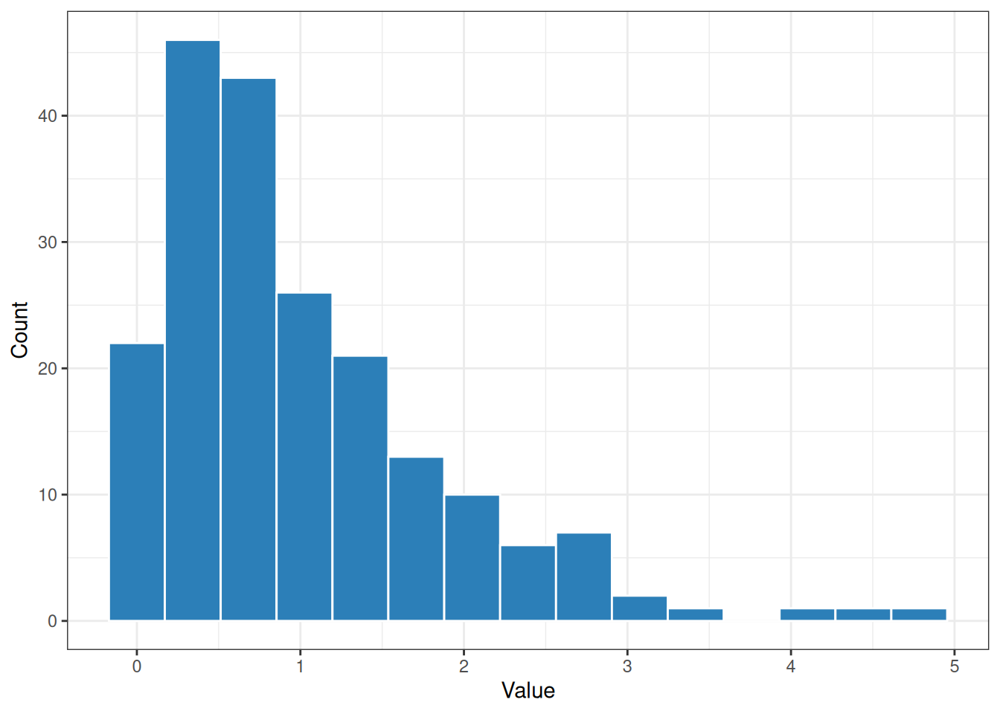
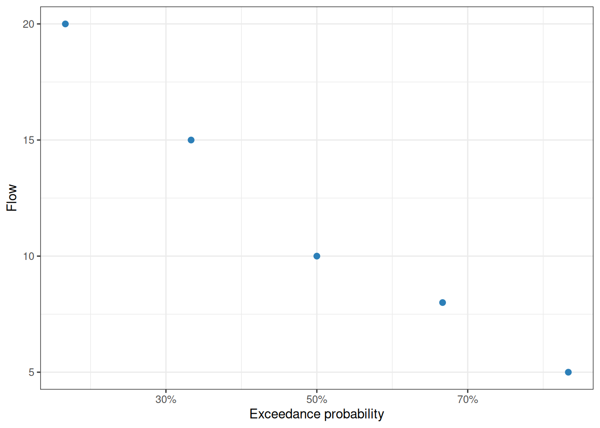

Introduction
preMetabolizer includes utilities for regularizing logger data, converting between UTC and solar time, assigning seasons, flagging outliers, and summarizing variability or flow distributions.
Fill missing timesteps
even_timesteps() builds a complete timestamp sequence from the observed time step and inserts rows where observations are missing.
logger <- tibble::tibble(
DateTime_UTC = as.POSIXct(
c(
"2024-06-01 00:00:00",
"2024-06-01 01:00:00",
"2024-06-01 03:00:00"
),
tz = "UTC"
),
temp_water = c(18.1, 18.0, 17.8)
)
even_timesteps(logger)
#> # A tibble: 4 × 2
#> DateTime_UTC temp_water
#> <dttm> <dbl>
#> 1 2024-06-01 00:00:00 18.1
#> 2 2024-06-01 01:00:00 18
#> 3 2024-06-01 02:00:00 NA
#> 4 2024-06-01 03:00:00 17.8For multi-site data, provide the site column so each site is completed independently.
multi_site <- tibble::tibble(
Site = c("A", "A", "A", "B", "B"),
DateTime_UTC = as.POSIXct(
c(
"2024-06-01 00:00:00",
"2024-06-01 01:00:00",
"2024-06-01 03:00:00",
"2024-06-01 00:00:00",
"2024-06-01 00:30:00"
),
tz = "UTC"
)
)
even_timesteps(multi_site, site_col = "Site")
#> # A tibble: 6 × 2
#> DateTime_UTC Site
#> <dttm> <chr>
#> 1 2024-06-01 00:00:00 A
#> 2 2024-06-01 01:00:00 A
#> 3 2024-06-01 02:00:00 A
#> 4 2024-06-01 03:00:00 A
#> 5 2024-06-01 00:00:00 B
#> 6 2024-06-01 00:30:00 BConvert UTC and solar time
convert_to_solar_time() and convert_from_solar_time() move between UTC and local solar time at a site longitude. Mean solar time is the time basis expected by stream metabolism models. Use type = "apparent" to additionally apply the equation of time (via SunCalcMeeus::solar_time()).
utc <- as.POSIXct("2024-06-21 18:00:00", tz = "UTC")
solar <- convert_to_solar_time(utc, longitude = -96.6)
solar
#> [1] "2024-06-21 11:33:36 UTC"
convert_from_solar_time(solar, longitude = -96.6)
#> [1] "2024-06-21 18:00:00 UTC"Assign seasons
get_season() classifies dates into astronomical seasons using the actual equinox and solstice dates for each year (computed via Meeus’s algorithms). It accepts a hemisphere argument and returns an ordered factor.
dates <- as.Date(c(
"2024-01-15",
"2024-04-15",
"2024-07-15",
"2024-10-15"
))
tibble::tibble(
date = dates,
season = get_season(dates)
)
#> # A tibble: 4 × 2
#> date season
#> <date> <ord>
#> 1 2024-01-15 Winter
#> 2 2024-04-15 Spring
#> 3 2024-07-15 Summer
#> 4 2024-10-15 AutumnFlag potential outliers
flag_z() applies a moving-window robust Z-score. The default return is a character flag vector. Set return_z = TRUE when you also want the Z-scores.
Summary statistics
calc_cv() calculates the coefficient of variation. Use robust = TRUE to summarize relative variability with the median and MAD instead of mean and standard deviation.
Histogram bin widths
calc_bin_width() implements several common histogram rules. This is helpful when plotting distributions that should use a consistent, data-driven bin width.
set.seed(1)
values <- stats::rexp(200)
calc_bin_width(values, method = "fd")
#> [1] 0.3417391
calc_bin_width(values, method = "doane")
#> [1] 0.4033973
ggplot(tibble::tibble(values = values), aes(values)) +
geom_histogram(
binwidth = calc_bin_width(values, method = "fd"),
color = "white",
fill = "#2c7fb8"
) +
labs(x = "Value", y = "Count") +
theme_bw()
Flow exceedance probabilities
calc_exceedance_prob() ranks flows with the Weibull plotting-position formula. Higher flows receive lower exceedance probabilities. The C++ implementation, rcpp_calc_exceedance_prob(), returns the same shape and is useful for large vectors.
flows <- tibble::tibble(
flow_cms = c(10, 5, 0, 15, 8, NA, 0, 20)
) |>
mutate(
exceedance = calc_exceedance_prob(flow_cms),
exceedance_no_zero = rcpp_calc_exceedance_prob(flow_cms, rm.zero = TRUE)
)
flows
#> # A tibble: 8 × 3
#> flow_cms exceedance exceedance_no_zero
#> <dbl> <dbl> <dbl>
#> 1 10 0.375 0.5
#> 2 5 0.625 0.833
#> 3 0 0.812 NA
#> 4 15 0.25 0.333
#> 5 8 0.5 0.667
#> 6 NA NA NA
#> 7 0 0.812 NA
#> 8 20 0.125 0.167
flows |>
filter(!is.na(exceedance_no_zero)) |>
ggplot(aes(exceedance_no_zero, flow_cms)) +
geom_point(color = "#2c7fb8", size = 2) +
scale_x_continuous(labels = \(x) paste0(round(100 * x), "%")) +
labs(
x = "Exceedance probability",
y = "Flow"
) +
theme_bw()